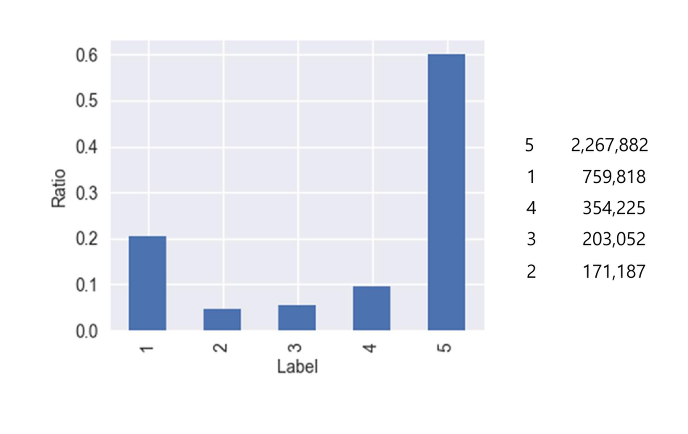

검증과 테스트에서는 원래 평점 분포를 유지Keep the original rating distribution for evaluation
학습 데이터만 언더샘플링으로 균형화하고, 검증·테스트 데이터는 원래의 불균형 분포를 유지했습니다.Only the training data was balanced through undersampling; validation and test retained the original imbalance.
공학석사 학위논문 · 자연어처리 · 2023Master’s thesis in engineering · NLP · 2023
2·3·4점 리뷰를 별도로 분류하면 별점을 더 잘 예측할 수 있을까요? Google Play 리뷰 3,756,164건을 수집해 BERT 기반 2단 분류를 비교하고, 예측 신뢰도를 평가했습니다.Does classifying two-, three-, and four-star reviews separately improve rating prediction? I collected 3,756,164 Google Play reviews to compare two-stage BERT-based classifiers and evaluate prediction confidence.

예를 들어 “괜찮지만 다시 쓰지는 않을 것”은 2점일까요, 3점일까요, 4점일까요?For example: “It’s fine, but I wouldn’t use it again.” Is that two stars, three, or four?
앱 리뷰의 텍스트 의미와 사용자가 선택한 1–5점 평점은 항상 일치하지 않습니다. 특히 2·3·4점은 감정과 판단 기준이 겹치며, 최종 전처리 데이터에서 5점 리뷰 2,219,925건과 2점 리뷰 169,818건 사이의 클래스 불균형도 컸습니다.Review language and a selected one-to-five-star rating do not always align. Reviews with two, three, or four stars can express similar opinions. The final dataset was also imbalanced: 2,219,925 five-star reviews versus 169,818 two-star reviews.
연구 질문은 “중간 평점만 별도로 분류하면, 한 번에 다섯 평점을 구분하는 모델보다 나은 결과를 얻을 수 있는가?”였습니다.I asked whether routing the middle ratings to a second classifier could improve prediction over a single five-class model.
Stage 1은 1점, 중간 그룹(2·3·4점), 5점을 먼저 구분합니다. Stage 2는 중간 그룹만 다시 2·3·4점으로 분류합니다. 서로 다른 난이도의 경계를 한 모델에 한꺼번에 학습시키지 않는 구조입니다.Stage 1 separates one-star reviews, a middle group of two-, three-, and four-star reviews, and five-star reviews. Stage 2 then classifies the middle group into its three individual ratings. This lets the second model focus on the ratings that are harder to tell apart.
학습 데이터만 언더샘플링으로 균형화하고, 검증·테스트 데이터는 원래의 불균형 분포를 유지했습니다.Only the training data was balanced through undersampling; validation and test retained the original imbalance.
BERT를 BiLSTM·BiGRU·Text-CNN 등과 결합한 모델과 비BERT 모델을 비교했습니다. VADER 감성 점수는 보조 신호로 사용했습니다.I compared BERT-based models with BiLSTM, BiGRU, or Text-CNN against non-BERT alternatives. VADER sentiment scores served as an auxiliary signal.
평점을 예측하는 데 그치지 않고, 신뢰도가 낮은 예측을 따로 식별하는 방법을 평가했습니다.I evaluated a way to flag predictions the model made with lower confidence.
2022년 11월 10일 기준 전 세계 유료·무료 상위 앱 각 45개에서 리뷰를 수집했습니다. 중복과 결측을 제거한 뒤 3,756,164건, 최종 전처리 후 모델링에는 3,694,069건을 사용했습니다.I collected reviews from the top 45 paid and 45 free apps worldwide as of November 10, 2022. Removing duplicates and missing records left 3,756,164 reviews; final preprocessing left 3,694,069 for modeling.
중복·결측 제거 후After removing duplicates and missing records
전처리 후 모델링 데이터Preprocessed modeling dataset
비교한 단일 단계 모델One-stage models compared
평가한 Stage 1 × Stage 2 조합Stage 1 × Stage 2 combinations evaluated
모델이 1~5점을 얼마나 잘 구분하는지 별도 테스트셋 147,763건으로 평가했습니다.Performance was measured on a held-out test set of 147,763 reviews across five rating classes.
단일 단계 모델 중 정확도가 가장 높았던 BERT-BiLSTM은 69.53%를 기록했습니다. 같은 구조 2단계 최고는 75.45%, 교차 구조 최고는 75.47%였고, Simple Hard Voting의 한 변형에서 최고 정확도 75.78%를 기록했습니다. 가장 정확했던 단일 단계 모델보다 6.25%p 높았습니다.BERT-BiLSTM, the most accurate one-stage model, reached 69.53%. The best same-structure two-stage model reached 75.45%, the best cross-structure combination 75.47%, and one Simple Hard Voting variant reached 75.78%—6.25 percentage points above the strongest one-stage result.
최고 가중 F1은 74.09%였습니다. 최고 정확도와 최고 가중 F1은 서로 다른 동률 처리 방식에서 나온 결과입니다.The highest weighted F1 was 74.09%. The highest accuracy and weighted F1 came from different tie-breaking variants.
정확도 상승만으로 모든 평점을 동일하게 잘 구분했다고 볼 수는 없습니다. 클래스 불균형과 중간 평점의 모호함이 남아 있어, 예측 신뢰도가 낮은 사례를 별도로 식별하고 결과의 적용 범위를 명시했습니다.Higher overall accuracy does not mean the model predicted every rating equally well. Class imbalance and ambiguity in the middle ratings remained, so I also identified lower-confidence predictions and stated the limits of the result.
2023년 석사 연구 · 오프라인 실험 결과2023 master’s thesis · Offline experimental results
결과를 비교하려면 먼저 같은 조건에서 무엇을 측정할지 정해야 합니다. 제품을 설계할 때도 정성 조사에서 나온 가설을 검증 가능한 질문으로 바꾸고, 결론을 내릴 때 무엇이 아직 불확실한지 살핍니다.A fair comparison starts by deciding what to measure and keeping the conditions consistent. I apply that discipline to design: I turn findings from qualitative research into testable questions and account for what remains uncertain when making a decision.
데이터가 결정을 대신한다고 보지는 않습니다. 어떤 가설을 더 믿어도 되는지, 어디까지 조심해야 하는지를 판단하는 근거로 씁니다.Data does not replace judgment for me. It shows which hypotheses deserve more confidence—and where caution is still needed.